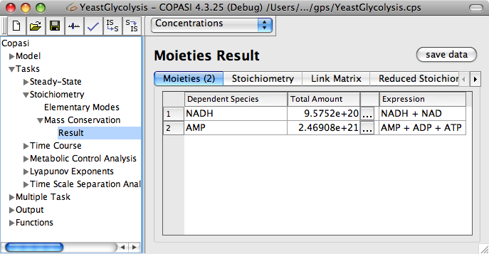

Calculating mass conservations in COPASI is also very easy. Navigate to the Tasks->Stoichiometry->Mass Conservation branch in the object tree and click on the Run button as with every other task.
|  |
| Mass Conservation Task Dialog with Results |
Moieties are the result of stoichiometric analysis. The result of this analysis is not unique it depends on the algorithm chosen. COPASI uses the Householder reduction method described in [
Vallabhajosyula06]. To make matters worse it even depends on the implementation of the Householder reduction for which COPASI relies on platform specific libraries for performance reasons, i.e., the result may differ on Windows and MacOS X. These differences are not crucial as the moieties build a basis of the linear dependent subspace of the solution and the choice of such a base system is obviously not unique.
However, often people like to know the total preserved amount of a moiety. Since the moiety calculation is not unique COPASI provides a convenience method to create a global quantity of type assignment to calculate this value. This method is accessible through the tool button. The result of this assignment is now independent from the algorithm chosen to calculate the moieties and thus may even be exported to SBML.